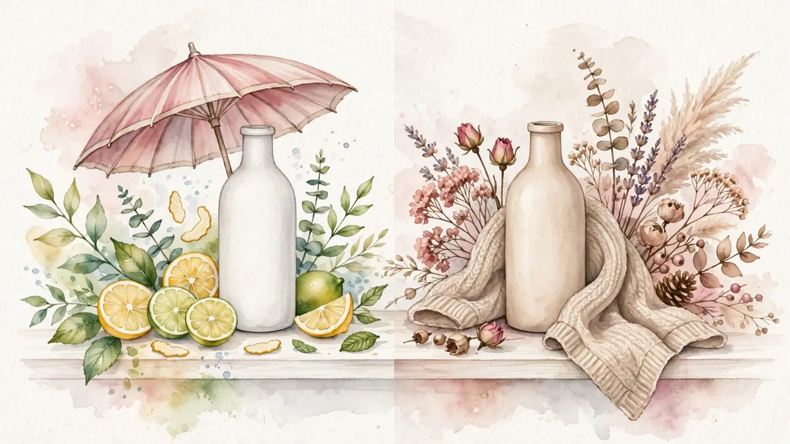
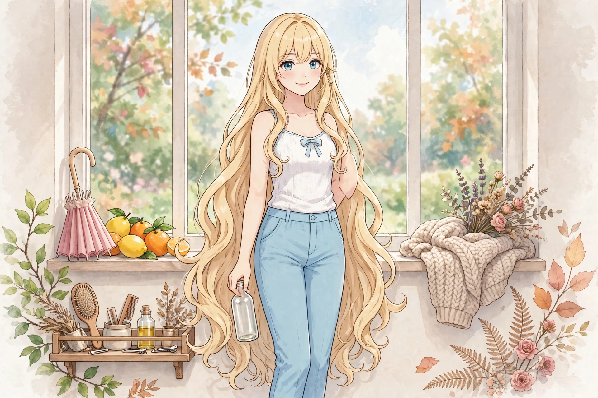

季節で変えるヘアケア

季節が変わると、髪と頭皮の感じ方も変わります。施術の現場でも、夏と冬ではお客様の相談内容が入れ替わります。この記事では、季節ごとに調整したいポイントを整理します。アイテムの買い替えだけでなく、使い方の調整も含めた内容です。
汗ばむ季節は「洗い方」の調整
汗ばむ季節は、頭皮のベタつきを感じやすくなります。この時期に見直したいのは、シャンプーの種類よりも先に、予洗いの長さとすすぎの丁寧さです。帽子をかぶる日が増える方は、帽子を脱いだ後の蒸れも気になるところです。帽子の内側の汚れも、定期的に洗うなど清潔に保つことが、頭皮の環境を整える一助になります。
洗う回数については、汗をかいた日にシャンプーをすること自体は自然なことです。ただし、洗浄の強い洗い方を繰り返すと乾燥感が出る場合もあるため、泡の行き渡らせ方とすすぎで調整するのが私の考え方です。
乾燥する季節は「つける場所」の調整
乾燥する季節は、毛先のパサつきや、静電気による広がりを感じやすくなります。この時期は、トリートメントをつける場所（毛先中心）と量の調整、アウトバスのアイテムを使う場合はその量の見直しがポイントです。暖房の効いた室内で過ごす時間が長い方は、髪も乾燥した空気にさらされ続けます。
ドライヤーの使い方も見直しどころです。乾かしすぎを避け、最後は冷風で仕上げるなどの工夫は、季節を問わず使えます。
季節の変わり目に、棚卸しをする
私は季節の変わり目に、浴室のアイテムを一度見直すことにしています。残量の確認、開封してから長く経ったもののチェック、季節に合わないアイテムの片付け。この小さな棚卸しが、次の季節のケアをスムーズにします。
季節対応は、特別なアイテムを買い足すことだけではありません。洗い方、つける場所、量。日々の調整の積み重ねが、季節の変化への一番の対応になります。
日差しの強い季節には、外出時の帽子や日傘といった生活の工夫も、髪の乾燥感を抑える助けになります。分け目を時々変えることも、日差しを受ける場所を分散させる小さな工夫です。また、海やプールに入った日は、家に帰ってからのすすぎを丁寧にするなど、その日の出来事に合わせた調整も季節対応の一部です。季節のケアは、特別なアイテムよりも、日々の小さな調整の積み重ねで成り立っています。
季節対応で迷ったら、まず「洗い方」か「つける場所」のどちらか一方だけを変えて、数日様子を見てください。同時に全部を変えると、何が合っていたのかが分からなくなります。ひとつずつ変えるのが、調整の基本です。

セラフィナ「季節が変わったら、洗い方とつける場所を見直す合図だね」